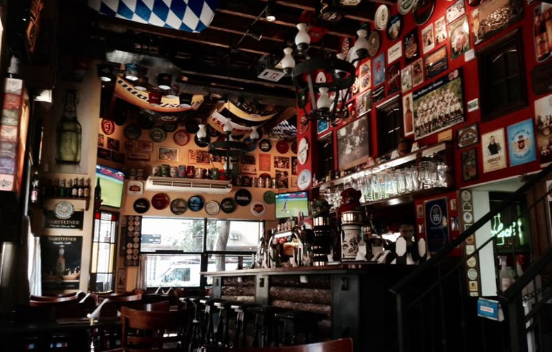

Untertürkheim
Tiene una ambientación tradicional alemana, con diseños en madera estilo alpino donde se ofrece bebida y comida alemana manteniendo un enfoque tradicional familiar.
Sitio Web
Tiene una ambientación tradicional alemana, con diseños en madera estilo alpino donde se ofrece bebida y comida alemana manteniendo un enfoque tradicional familiar.
Un bar que vende su propia cerveza. 12 canillas con sus estilos propios que varian mucho según temporada. La cerveza es muy sabrosa, de buen cuerpo y buena calidad.
Antares es una cervecería que nació (y vive) en Mar del Plata y desde ser una pequeña productora se ha convertido en una marca con muchos locales en todo el país.
Copyright© Lucas Fuentes 2021